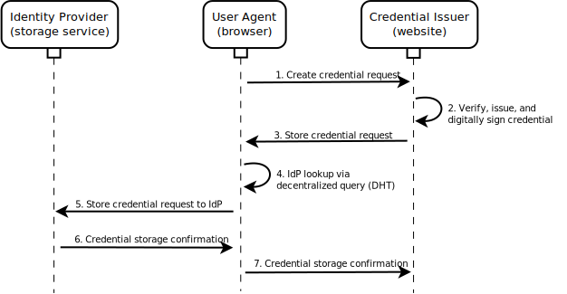
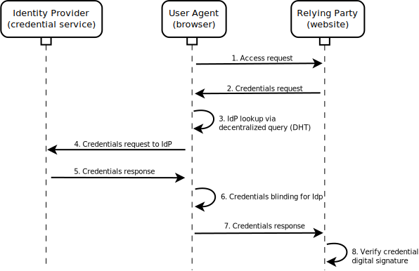

An identity is a collection of attributes about an entity that distinguish it from other entities. Entities are anything with distinct existence, such as people, organizations, concepts, or devices. Some entities, such as people, are multifaceted, having multiple identities that they present to the world. People are often able to establish trust by demonstrating that others have made valuable claims about their identities. One way of doing this is by presenting a credential. A credential is a set of claims made by an entity about an identity. A credential may refer to a qualification, achievement, quality, or other information about an identity such as a name, government ID, home address, or university degree that typically indicates suitability.
This specification describes how to express a digital identity and a collection of digital credentials that assert claims about that identity. It also describes a set of mechanisms for issuing and requesting credentials.
This is an experimental specification that is attempting to unify the work performed in the Credentials Community Group, the Web Payments Community Group, the Linked Data community, the WebID Community Group, and the Mozilla Persona team. As such, the specification borrows a number of concepts from each group. It attempts to synthesize these concepts into a comprehensive solution that can be easily implemented and deployed by Web developers in order to help foster a rich ecosystem of digital identities and credentials on the Web.
This spec hasn't been updated in many months and the work has evolved quite a bit since then. An update will occur as soon as other supporting documents are in order and time permits. -- 9/24/15
Add a section specifying how blank nodes or pseudonyms can be used for self-signed and IdP-asserted credentials.
Add a security/privacy consideration section that clearly marks out that a single key should not be used for authentication at all websites and that specifies how a different CryptographicKeyCredential can be generated and signed by an IdP for every new origin visited. Add a note that this approach is only for presenting identities that contain attributes that are asserted by self-signed or IdP-asserted credentials. This section should also detail best practices for creating a number of separate identities that aggregate credentials asserted by different third parties that are intended to be linked. There should be no doubt that this system is engineered to support many different identities per individual user.
Add a section about revocation that also includes privacy concerns (leakage of credential use at particular consumers to issuers). Specify how credentials may self-describe their revocation rules and how issuers may either publish revocation status credentials that can be aggregated over time or on demand by IdPs or how they can periodically resign previously issued credentials with new revocation validity periods (and these credentials can then be refetched by users, IdPs, or authorized value-add third party services).
Add a section on the conversion of certain credentials, by anonymizer services, to short-lived bearer credentials. These bearer credentials allow information to be asserted with a level of trust that is dependent upon the anonymizer service (which may actually be the same issuer that issued a credential), but can be used to help enhance privacy.
Add a section on the use of ephemeral keys for public terminal use.
Add a section on integration with hardware security devices, FIDO, etc.
An identity is a set of information that can be used to identify a particular entity. Entities are anything with distinct existence, such as a person, organization, concept, or device. We typically use credentials, or claims made by others about our identities, to authenticate ourselves and ultimately gain access to various services. For example, we use email addresses to identify ourselves to online services, driver's licenses to prove that we are capable of operating a motor vehicle, university degrees to prove we are well-trained and knowledgeable, and government-issued passports to travel between countries or to access financial services. It is the goal of this specification to provide an easy, standard way to express, issue, and consume identity credentials on the Web.
There are a number of desirable capabilities for credentials that have been identified as requirements for this specification:
In order to store the unbounded variety of attributes that could be claimed in identity credentials, a simple but extensible data model is utilized. The specification uses a data storage and expression approach called Linked Data. It is a way of expressing information on the Web that is both simple and extensible. Specifically, the Linked Data technology used by this specification is JSON-LD [[!JSON-LD]].
Any arbitrary information about an identity can be expressed using JSON-LD. However, in order to express verifiable claims, credentials must be associated with the identity. This section demonstrates how to express identities and credentials.
The following example demonstrates how to express a simple identity that
contains no independently verifiable claims. Each property of the identity,
such as name or email, is given context via
the @context value. Other contexts can be used or combined to
express any arbitrary information about an identity in idiomatic JSON.
{
"@context": "https://w3id.org/identity/v1",
"id": "did:ebfeb1f712ebc6f1c276e12ec21",
"type": ["Identity", "Person"],
"name": "Alice Bobman",
"email": "alice@example.com",
"birthDate": "1985-12-14",
"telephone": "12345678910"
}
The following example demonstrates how to express a simple credential that
contains one verifiable claim about a particular identity. In this case, the
claim is that the entity with the identity identified by
did:ebfeb1f712ebc6f1c276e12ec21 is 21 years of age or older. While
a human reading the property ageOver may be able to guess its
meaning by its name, the context maps it a global identifier (URL) where
a document could be retrieved that provides its semantics in a machine-readable
data format. There is also information about the credential itself, such
as an identifier for the entity that issued it and a date for when it was
issued. The credential contains a signature that can be used
to verify its entire contents, including the claim.
{
"@context": "https://w3id.org/identity/v1",
"id": "http://example.gov/credentials/3732",
"type": ["Credential", "ProofOfAgeCredential"],
"issuer": "https://dmv.example.gov",
"issued": "2010-01-01",
"claim": {
"id": "did:ebfeb1f712ebc6f1c276e12ec21",
"ageOver": 21
},
"signature": {
"type": "LinkedDataSignature2015",
"creator": "https://dmv.example.gov/keys/6",
"signature": "2332f32g43ve23g23g23g/g3223gegvgre212fb488vh"
}
}
The following example demonstrates how to express a more complex credential that contains some more verifiable claims about a particular identity.
TODO: Show use of another context to demonstrate decentralized extensibility.
{
"@context": "https://w3id.org/identity/v1",
"id": "http://example.gov/credentials/3732",
"type": ["Credential", "PassportCredential"],
"name": "Passport",
"issuer": "https://example.gov",
"issued": "2010-01-01",
"claim": {
"id": "did:ebfeb1f712ebc6f1c276e12ec21",
"name": "Alice Bobman",
"birthDate": "1985-12-14",
"gender": "female",
"nationality": {
"name": "United States"
},
"address": {
"type": "PostalAddress",
"addressStreet": "372 Sumter Lane",
"addressLocality": "Blackrock",
"addressRegion": "Nevada",
"postalCode": "237842",
"addressCountry": "US"
},
"passport": {
"type": "Passport",
"name": "United States Passport",
"documentId": "123-45-6789",
"issuer": "https://example.gov",
"issued": "2010-01-07T01:02:03Z",
"expires": "2020-01-07T01:02:03Z"
}
},
"signature": {
"type": "LinkedDataSignature2015",
"creator": "https://example.gov/keys/27",
"signature": "3780eyfh3q0fhhfiq3q9f8ahsidfhf29rhaish"
}
}
The following example demonstrates how to express one or more credentials along
with an identity. This approach allows one to express an identity and some
credentials that assert certain properties about it without losing data
fidelity. Because Linked Data is a graph-based format and credentials have been
digitally-signed as independent graphs of information, they are expressed using
the @graph keyword. An application that receives an
identity in this format can be ensured that the credential data won't be
accidentally mixed with data in any other graphs in the
identity document. Once the application has verified the digital
signatures in each credential, it can safely merge all of the claim data into a
single graph of information about the identity.
{
"@context": "https://w3id.org/identity/v1",
"id": "did:ebfeb1f712ebc6f1c276e12ec21",
"type": ["Identity", "Person"],
"name": "Alice Bobman",
"email": "alice@example.com",
"birthDate": "1985-12-14",
"telephone": "12345678910",
"credential": [{
"@graph": {
"@context": "https://w3id.org/identity/v1",
"id": "http://example.gov/credentials/3732",
"type": ["Credential", "PassportCredential"],
"name": "Passport",
"issuer": "https://example.gov",
"issued": "2010-01-01",
"claim": {
"id": "did:ebfeb1f712ebc6f1c276e12ec21",
"name": "Alice Bobman",
"birthDate": "1985-12-14",
"gender": "female",
"nationality": {
"name": "United States"
},
"address": {
"type": "PostalAddress",
"addressStreet": "372 Sumter Lane",
"addressLocality": "Blackrock",
"addressRegion": "Nevada",
"postalCode": "237842",
"addressCountry": "US"
},
"passport": {
"type": "Passport",
"name": "United States Passport",
"documentId": "123-45-6789",
"issuer": "https://example.gov",
"issued": "2010-01-07T01:02:03Z",
"expires": "2020-01-07T01:02:03Z"
}
},
"signature": {
"type": "LinkedDataSignature2015",
"creator": "https://example.gov/keys/27",
"signature": "3780eyfh3q0fhhfiq3q9f8ahsidfhf29rhaish"
}
}
}]
}
The term Identity Provider may be too overloaded at this point. In other systems such as SAML and OpenID Connect, identity providers essentially double as issuers and what this spec refers to as identity providers. Because this spec's view of an identity provider is more limited (it is more like a simple identity agent), perhaps another term would be more fitting and reduce confusion when comparing architectures.
An identity provider is a software service that acts as an agent for a credential holder. It helps the credential holder manage one or more of their identities and their associated credentials. It does not typically act as an issuer. For the purpose of this specification, its primary utility is to implement standard APIs to allow the storage and retrieval of credentials.
A credential holder may specify the URL to their identity provider in their identity document. This URL can be retrieved to determine the service endpoints for the identity provider.
Specify the service endpoints that an IdP should/must define. Include that it can optionally provide a credential management URL. Indicate that how an IdP decides to authenticate a user whose user agent visits its credential management URL is out-of-scope.
{
"@context": "https://w3id.org/identity/v1",
"id": "did:ebfeb1f712ebc6f1c276e12ec21",
"type": "Identity",
"idp": "https://idp.example.com"
}
Show example of JSON-LD document that is returned when querying IDP url.
There are two mechanisms that allow access an Identity's credentials. The first is mechanism that allows an authorized client to access credentials via an HTTP API. HTTP API clients are granted authorization by authenticating with an HTTP Signature [[!HTTP-SIGNATURES]] or by using a macaroon [[!Macaroons]]. The second mechanism is to use a browser-based API that extends Credential Management Level 1 [[!CREDENTIAL-MANAGEMENT]] and allows the identity owner to interactively decide which credentials to share.
Consider adding, to the new HTTP API section, a flow with 4xx Credentials Required (if Authorization Required doesn't fit) with a response that includes a location to get a credentials query, which when fulfilled via a POST to an endpoint, will result in a macaroon. The macaroon can then be used to access a resource or be attenuated and given out to delegate access.
The HTTP API can be used to store or get an identity containing credentials. In for a client to be authorized to use the HTTP API it must either be pre-authorized and use HTTP Signatures [[!HTTP-SIGNATURES]] to authenticate or it must possess an appropriate macaroon.
Add section for authenticating to the various endpoints using plain HTTP Signatures [[!HTTP-SIGNATURES]] (no macaroon) for pre-authorized clients.
The only entity that is automatically authorized to store or get an identity with credentials from an identity provider is the entity that is identified by the identity. This entity may directly access the HTTP API by authenticating with an HTTP Signature [[!HTTP-SIGNATURES]] or it may request a macaroon that can be attenuated to delegate authorization to another party. To get a macaroon a client must:
The retrieved macaroon grants full authorization to both the get and store endpoints for the identity. It should be attenuated prior to delegating authorization to a third party. For example, the following caveats could be added to the macaroon: an expiration date, the specific types of credentials that can be retrieved, and a requirement to provide a credential that authenticates the user of the macaroon as being identified by a particular identity.
The following subsections are very high-level, incomplete, and rough. Add details.
New credentials can be stored at an identity provider via its HTTP API. To store credentials using this mechanism, a client must follow this algorithm:
A "view" of an identity can be requested by querying for certain attributes or particular types of credentials from an identity provider via its HTTP API. To get credentials using this mechanism, a client must follow this algorithm:
This section of this specification describes an extension to [[!CREDENTIAL-MANAGEMENT]].
This section needs a lot of detail added to it. It currently only shows a very high level view of the extensions. More details about how this spec extends [[!CREDENTIAL-MANAGEMENT]] are needed, for an implementation, see: https://github.com/digitalbazaar/credentials-polyfill
This specification adds a new type of credential, IdentityCredential:
[Constructor(dictionary identity), Exposed=Window]
interface IdentityCredential : Credential {
readonly attribute dictionary identity;
static Promise register(dictionary options);
};
An identity provider may pass its identifier to the
register method to ask the user agent to help the
user register the identity provider with one of their identities.
Provide more details about register. Indicate a new identity
can be created by the user or an existing one can be used. Specify valid
options, return value, and expected behavior for IdP.
When storing an IdentityCredential, credential, via
navigator.credentials.store, the user agent must follow this algorithm:
Provide steps for dealing with ensuring the user has a public/private key pair on their device that matches credential.identity. If one doesn't yet exist, provide steps for generating one.
id property of credential to get
the identity document.
store, its options.store to
credential.identity, and its identity to a
digitally-signed copy of the identity matching credential.identity
along with a CryptographicKeyCredential containing a self-signed
public key. When this CredentialOperation is completed, the promise
associated with navigator.credentials.store will be resolved.
Spec out an alternative approach where the identity provider elects to have the user agent provide the UI for storing the IdentityCredential; the user agent uses the identity provider's HTTP API to ultimately store the IdentityCredential.

When getting an IdentityCredential, via
navigator.credentials.get, the user agent must follow this algorithm:
Provide steps for allowing a user to register an existing identity to their user agent.
get, its options.query to the
query passed in the options for navigator.credentials.get, and its
identity to a digitally-signed copy of the identity selected
along with a CryptographicKeyCredential containing a self-signed
public key. When this CredentialOperation is completed, the promise
associated with navigator.credentials.get will be resolved.
Spec out an alternative approach where the identity provider elects to have the user agent provide the UI for getting the IdentityCredential; the user agent uses the identity provider's HTTP API to process the query and retrieve any data that must be shown on the UI.
Add section detailing how the browser can synthesize a CryptographicKeyCredential for simple website login.
